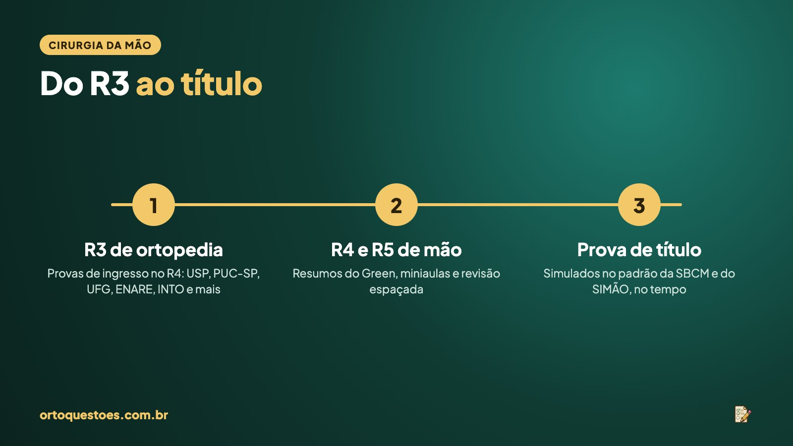
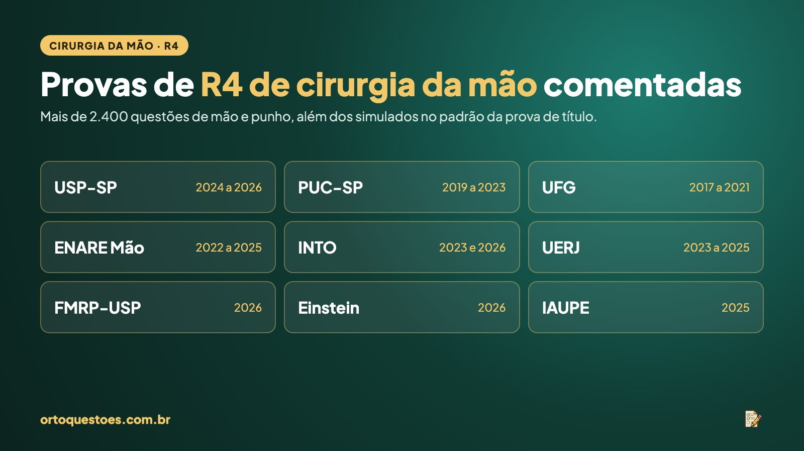
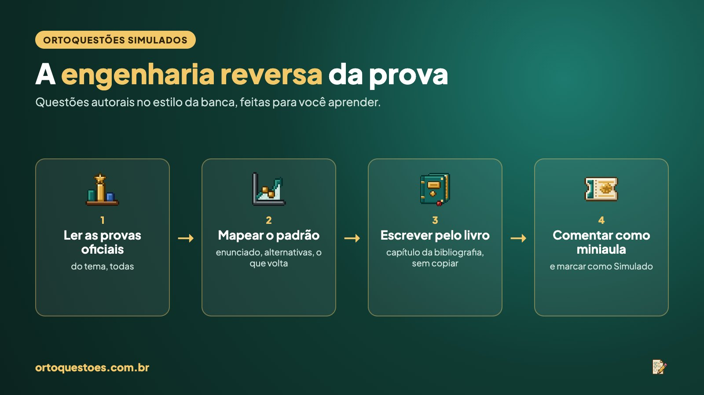

Para quem é este preparatório

A cirurgia da mão é uma área de atuação com prova própria em dois momentos: a prova de R4 de residência de cirurgia da mão, no fim do R3 de ortopedia, e a prova de título, depois do R4 e do R5. Os dois públicos estudam o mesmo conteúdo, com profundidades diferentes, e é para eles que a área de Cirurgia da Mão do Orto Questões foi montada:
- R3 de ortopedia que vai fazer a prova de ingresso no R4 de cirurgia da mão.
- R4 e R5 de cirurgia da mão que se preparam para a prova de título.
- Ortopedistas que querem reforçar a mão e o punho para o TEOT e o TARO, que também cobram o tema.
Provas anteriores de cirurgia da mão no site

São mais de 2.400 questões de mão e punho comentadas. Para o curso para R4 de residência de cirurgia da mão, estão as provas de ingresso destas instituições:
| Prova | Anos |
|---|---|
| USP-SP | 2024, 2025 e 2026 |
| PUC-SP | 2019 a 2023 |
| UFG | 2017, 2019, 2020 e 2021 |
| ENARE Cirurgia da Mão | 2022, 2023 e 2025 |
| INTO | 2023 e 2026 |
| UERJ | 2023, 2024 e 2025 |
| FMRP-USP | 2026 |
| Einstein | 2026 |
| IAUPE | 2025 |
Além delas, as questões de mão e punho do TARO (2006 a 2026) e do TEOT. Veja a lista completa em provas anteriores e a área em cirurgia da mão.
Preparatório para a prova de título em cirurgia da mão

Quem procura provas anteriores da prova de título ou do simulado da prova de título de cirurgia da mão encontra no Orto Questões os OrtoQuestões Simulados no padrão dessas provas. Sendo transparente: não publicamos as questões oficiais na íntegra. Fazemos questões parecidas, na mesma pegada, por engenharia reversa:
Estudamos o retrato da prova
Lemos as provas anteriores e anotamos o formato: quatro alternativas, enunciados curtos que cobram um fato só, os blocos "Sobre X:" com afirmativas, os temas que mais voltam (nervos periféricos, tendões flexores e extensores, fraturas do carpo e dos metacarpos, retalhos, mão congênita, mão reumatoide, compressões nervosas).
Reescrevemos com variação, a partir do Green
Cada questão é reescrita ou criada a partir do Green's Operative Hand Surgery, com outro caso, outra ordem e outras alternativas, e o gabarito apoiado no livro.
Comentamos como miniaula
A questão ganha o comentário completo, com a explicação de cada alternativa, e aparece marcada como OrtoQuestões Simulados, inspirada na prova e no ano de origem.
Assim você treina o estilo da prova de título sem depender de material copiado, e aprende o conteúdo que ela cobra. Os OrtoQuestões Simulados são autorais e não têm vínculo com a sociedade que organiza a prova de título nem com os organizadores do simulado.
Comentários que são miniaulas de cirurgia da mão
Todo comentário do Orto Questões é escrito como uma miniaula. Ele explica o que é a doença ou a fratura, o mecanismo, a classificação e a conduta. Depois mostra por que a alternativa correta está certa e por que cada uma das erradas está errada, sempre que possível com o livro, o capítulo e a página de onde veio a informação. Assim, quem responde uma questão aprende o tema inteiro pelas alternativas, e não só um fato solto.
Responder um grupo de questões de um mesmo assunto, lendo os comentários, vira um estudo ativo completo: você tenta lembrar, descobre o que não sabia, lê a explicação na hora certa e a revisão espaçada traz de volta o que ficou fraco. É o método que mais ajuda a lembrar no longo prazo, explicado no nosso guia de estudo ativo.
Responder um bloco de 15 questões de tendões flexores, lendo o comentário de todas as alternativas, cobre zonas de VERDAN, tipos de sutura, reabilitação, rupturas e reconstrução em estágios. É uma aula inteira, só que ativa.
Resumos do Green's Operative Hand Surgery
A Biblioteca tem 24 resumos de capítulos do Green's Operative Hand Surgery, a bibliografia central da cirurgia da mão, e saem resumos novos toda semana. Cada um separa o que a prova cobra, explica o porquê e se liga às questões do tema.
Green's Operative Hand Surgery · 24 resumos
- Amputações e reimplantes na mão Capítulo 42 · Replantation (com o capítulo 49, Digital Amputations)
- Artrose do punho e artroscopia Capítulo 12 · Wrist Arthrodesis and Arthroplasty
- Artrose e artroplastia do cotovelo Capítulo 27 · Total Elbow Arthroplasty
- Biomecânica da mão e do punho Capítulo 13 · Wrist Instabilities, Misalignments, and Dislocations
- Dedo em gatilho e outras tenossinovites Capítulo 56 · Tendinopathy
- Deficiências longitudinais e mão torta Capítulo 38 · Malformations and Deformities of the Wrist and Forearm (com os capítulos 35, 36 e 37)
- Deformidades dos dedos Capítulo 10 · Treatment of the Stiff Finger and Hand
- Doença de DUPUYTREN Capítulo 4 · Dupuytren Disease
- Doença de KIENBÖCK Capítulo 16 · Fractures of the Carpal Bones
- Exame físico da mão e do punho Capítulo 28 · Compression Neuropathies (com os capítulos 5, 6, 8, 10, 13, 14, 31, 56 e 60)
- Fibrocartilagem triangular e punho ulnar Capítulo 14 · Distal Radioulnar Joint
- Imagem da mão e do punho Capítulo 15 · Distal Radius Fractures (com os capítulos 7, 8, 11, 12, 13, 14, 16, 41 e 55)
- Lesões de nervos periféricos Capítulo 30 · Nerve Injury and Repair
- Lesões dos tendões extensores Capítulo 5 · Extensor Tendon Injury
- Lesões dos tendões flexores Capítulo 6 · Lesão do tendão flexor
- Malformações congênitas da mão e do antebraço Capítulos 35 a 38 · Mão pediátrica, com o Tachdjian (caps. 12, 21 e 35)
- Mão reumatoide Capítulo 55 · Rheumatoid Arthritis and Other Connective Tissue Diseases
- Neuropatias de compressão no membro superior Capítulo 28 · Neuropatias de compressão
- Plexo braquial e paralisia obstétrica Capítulo 34 · Traumatic Brachial Plexus Injury (com o capítulo 40, Pediatric Brachial Plexus Palsy)
- Retalhos e cobertura cutânea da mão e do membro superior Capítulo 44 · Nonmicrosurgical Coverage of the Upper Extremity
- Rizartrose e artrose da mão Capítulo 11 · Treatment of the Osteoarthritic Hand and Thumb
- Sindactilia e polidactilia Capítulo 36 · Deformities of the Hand and Fingers
- Síndrome do túnel do carpo Capítulo 31 · Principles of Tendon Transfers of Median, Radial, and Ulnar Nerves (oponentoplastia de CAMITZ), lido com o Capítulo 28 · Compression Neuropathies, eixo do resumo, e os capítulos 29, 53 e 56
- Tumores da mão Capítulo 59 · Bone and Soft Tissue Tumors (com o capítulo 58, Skin Tumors of the Hand and Upper Extremity)
Treino ativo: como estudar para o R4 e para o título
Escolha um tema por semana
Leia o resumo do Green do tema e responda as questões dele no mesmo dia, marcando Certeza, Dúvida ou Chute.
Deixe a revisão espaçada trabalhar
O que você errou ou chutou volta no dia certo. Você só precisa abrir o site.
Use o Atlas 3D para a anatomia
Na mão, quase toda questão é anatomia aplicada. Abra o punho e a mão no Atlas 3D, ligue a camada de nervos ou de tendões e veja o que a questão descreveu.
Feche com provas inteiras no tempo
Perto da prova, faça as provas anteriores da instituição que você vai prestar e os simulados no padrão do título, com o relógio rodando.
O cronograma de cirurgia da mão organiza tudo isso até a data da sua prova, com o dia de plantão como dia leve.
Quanto custa

Comece com a conta grátis: 20 questões por dia, já com os comentários completos. Para treinar sem limite, com o cronograma e os simulados, o plano vai de R$ 39,90 a R$ 29,90 por mês:
| Plano | Preço por mês | Total cobrado |
|---|---|---|
| Grátis | R$ 0 | 20 questões por dia, sem cartão |
| Mensal | R$ 39,90 | R$ 39,90 a cada mês |
| Semestral | R$ 34,90 | R$ 209,40 a cada 6 meses |
| Anual | R$ 29,90 | R$ 358,80 por ano |
Pagamento por cartão, com renovação automática, ou por Pix, como pagamento único do período. Há garantia de 7 dias. As regras completas estão nas Condições da Assinatura.
Perguntas frequentes
Qual o melhor curso de cirurgia da mão para R4?
O que faz você treinar as provas de ingresso no estilo real. O Orto Questões reúne provas anteriores de R4 de cirurgia da mão da USP-SP, PUC-SP, UFG, ENARE, INTO, UERJ, FMRP-USP, Einstein e IAUPE, comentadas como miniaulas, com resumos do Green.
Vocês têm as provas anteriores da prova de título e do simulado?
Temos os OrtoQuestões Simulados no padrão da prova de título e do simulado da prova de título de cirurgia da mão: questões autorais, parecidas e na mesma pegada, feitas por engenharia reversa a partir do Green. Não publicamos as questões oficiais na íntegra, e não temos vínculo com a sociedade que organiza a prova de título nem com os organizadores do simulado.
Quantas questões de cirurgia da mão existem no site?
Mais de 2.400 questões de mão e punho comentadas, entre provas de ingresso no R4, questões do TARO e do TEOT e OrtoQuestões Simulados.
Quanto custa o preparatório de cirurgia da mão?
A conta grátis libera 20 questões por dia. Os planos custam R$ 39,90 por mês (mensal), R$ 209,40 a cada 6 meses (R$ 34,90 por mês) ou R$ 358,80 por ano (R$ 29,90 por mês), com garantia de 7 dias.
Serve para o R3 que vai prestar R4 de cirurgia da mão?
Sim, é o público principal, junto com os R4 e R5 que se preparam para a prova de título.
Sua prova de cirurgia da mão começa hoje
Crie a conta grátis, escolha Cirurgia da Mão e responda as suas 20 questões do dia.